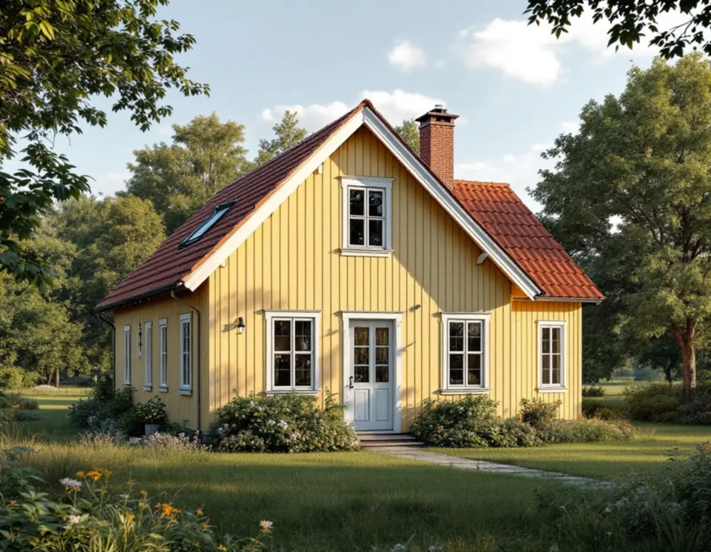
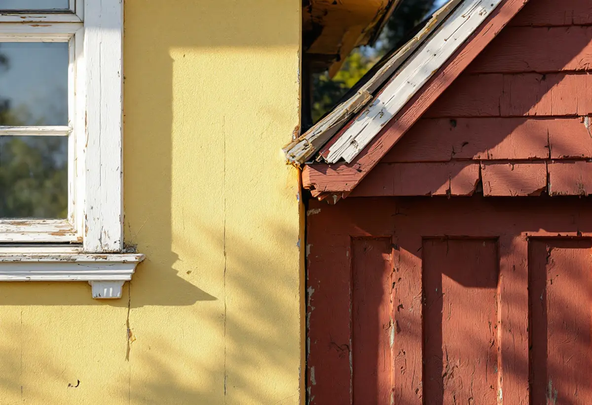

Genomgång av huset
Vi går runt alla fasader och noterar vad som är slitet, vad som är smutsigt och vad som håller.
En fasad behöver sällan målas om överallt på en gång. Söderväggen, fönstren och vindskivorna slits först, medan norrfasaden kan klara sig längre. Geal Entreprenad AB målar fasader i Järfälla och hjälper dig att se vad som behöver göras i år, vad som kan vänta och var det räcker med en tvätt.

Kommunens kulturmiljöplan för Kallhäll beskriver villorna i Björkliden som egnahem av ganska enkel utformning, vanligen i en våning med källare och inredd vind och med branta, ofta brutna sadeltak. Fasaderna är oftast slätpanel eller locklistpanel, färgskalan är ljus men falurött förekommer, och tomterna var från början 1 500–2 000 kvadratmeter. Planen konstaterar att flera egnahem har förändrats genom att traditionella material och färger bytts mot mer moderna, och föreslår utökad rådgivning för att behålla traditionella färgtyper och en ursprunglig färgsättning.
Planens inledning återger plan- och bygglagens krav på att ett byggnadsverk ska hållas i vårdat skick och underhållas så att utformningen och de tekniska egenskaperna i huvudsak bevaras. Underhållet ska anpassas till omgivningens karaktär och byggnadens värde. I en detaljplan kan en k-beteckning dessutom föreskriva en viss färgsättning eller att underhållet ska ske med traditionella material, så det är värt att läsa planen för huset innan färgen beställs.

Riksantikvarieämbetets handbok om byggnadsmåleri skriver att vissa byggnadsdelar slits snabbare än andra. Söderfasader behöver målas om oftare än norrfasader, och fönster oftare än fasaden runt omkring. Handboken anger att generella underhållscykler är svåra att ge, eftersom det beror på hur utsatt huset är och var i landet det ligger.
Väntar man för länge med de utsatta delarna är risken stor att underlaget tar skada, och då blir nästa renovering både dyrare och mer komplicerad. Länsstyrelsernas blad om målning på trä vänder på frågan: om färgen bara är smutsig kanske det räcker att tvätta, och hela huset kanske inte måste målas om.
En rätt sammansatt och rätt strykt linoljefärg har enligt handboken en livslängd på omkring 15–20 år, beroende på hur skyddad fasaden är. Mild rengöring och bättring av skadade partier beskrivs som ett utmärkt sätt att förlänga livslängden på i övrigt intakt oljefärg, och utsatta delar som fönstersnickerier, vindskivor och sydfasader behöver målas om oftare än resten. Det viktiga är att inte skjuta upp ommålningen så länge att arbetet blir onödigt svårt.
Vid bättring ska kulören stämma med det som redan sitter på väggen. Handboken påpekar att kulören på fabrikstillverkad slamfärg kan skilja sig något mellan tillverkare, och att det är särskilt viktigt att få samma kulör vid bättringsmålning. Vi noterar därför vilken färg och kulör som används, så att nästa bättring kan göras med samma.
Riksantikvarieämbetet råder att man vid en renovering sparar några små ytor som inte behandlas alls, på undanskymda ställen. De är i praktiken den bästa dokumentationen för den som nästa gång ska välja metod, och uppgifter om vilka material som använts bör också sparas. En sådan yta lämnar vi gärna orörd bakom ett stuprör eller under en takfot.
Järfälla kommun skriver att en fasadändring inte kräver bygglov på ett en- eller tvåbostadshus, utom på en byggnad eller i ett område som är särskilt värdefullt eller där detaljplanen har utökad lovplikt. Den som vill vara säker kan söka frivilligt bygglov. Om kulörer och färgskalor i kommunens radhusområden kan du läsa under målare i Järfälla, om att byta panel och skivor under fasadrenovering i Järfälla och om färgtyper under målare.
Vi går runt alla fasader och noterar vad som är slitet, vad som är smutsigt och vad som håller.
Du får veta vad som bör göras nu och vad som kan vänta ett par år.
Tvätt, bättring och hel ommålning redovisas var för sig.
Fasaden rengörs varsamt, och där det räcker stannar vi där.
Skadade partier skrapas och grundas, sedan stryks det som behöver strykas.
Färgtyp och kulör skrivs ner, och en liten provyta lämnas orörd.
Att måla och rengöra fasaden på ett småhus ger rotavdrag enligt Skatteverket, och det gäller även ett mindre jobb som bara omfattar söderväggen och fönstren. Ställningen räknas också. Är radhuset en bostadsrätt ger arbetet på fasaden inget avdrag.
Avdraget är 30 procent av arbetskostnaden, högst 50 000 kr per person och år och högst 75 000 kr tillsammans med rutavdrag. Färg, material och resor ger inget avdrag. Vi drar avdraget direkt på fakturan.
Hur stor del av fasaden som behöver målas nu, hur mycket som räcker med tvätt och bättring och hur många fönster och vindskivor som ingår väger tyngst. Efter ett gratis platsbesök får du ett skriftligt kostnadsförslag.
Fasad, fönster och invändig målning.
Målare i Stockholm →Takbyte, takbesiktning och plåtarbeten.
Takläggare i Järfälla →Jakobsberg, Viksjö och Kallhäll.
Takrenovering i Järfälla →Planbesked, extra bostad och ansvar.
Byggföretag i Järfälla →Radhus, kedjehus och souterränghus.
Badrumsrenovering i Järfälla →Kedjehus, sekelskiftesvillor och parstuga i Stäket.
Fasadrenovering i Järfälla →Bruksvillor, radhus och 70-talsfönster i Järfälla.
Fönsterbyte i Järfälla →Kedjehus, egnahem och gamla golvskikt.
Golvläggare i Järfälla →Slipa och behandla trappan i huset.
Golvslipning i Järfälla →Kedjehus, radhus och souterräng.
Köksrenovering i Järfälla →Putsade radhus, kedjehus och villor i Järfälla.
Målare i Järfälla →Stuprör, skärmtak och plåttak i Järfälla.
Plåtslagare i Järfälla →Förgårdar, förråd och ytterdörrar.
Snickare i Järfälla →Ny tapet på skivväggar i radhus.
Tapetsering i Järfälla →